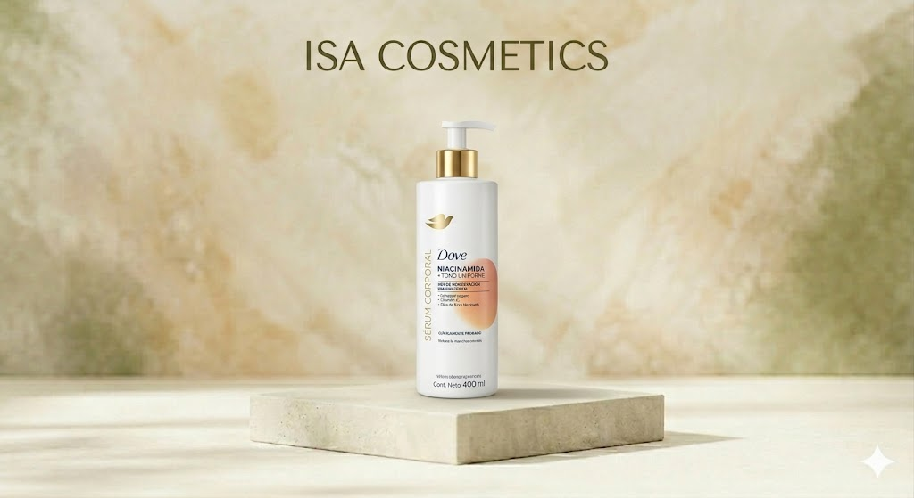

Uso y beneficios: Ofrece 48 horas de humectación regenerativa. Está enriquecido con Vitamina C y Óleo de Rosa Mosqueta para reducir manchas oscuras y unificar el tono de la piel. Para quiénes: Ideal para personas que buscan tratar la hiperpigmentación (manchas) corporal y recuperar la luminosidad natural de la piel. Cantidad: 400 ml. Valor: Alta eficacia regenerativa con tecnología de sérum dermo-hidratante clínicamente probado.
Bs 140 Consultar por WhatsApp